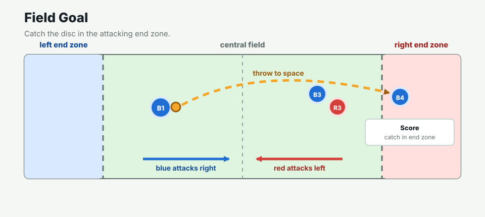

Latest V2 awake/sleep setup with DeepSeek V4 Flash thinking. 19 frames, 135 API calls, estimated cost $0.112026, stop reason score.
Cost uses DeepSeek cache-hit and cache-miss usage fields; other providers need their own estimator.
Open reportA simplified 5v5 frisbee world for LLM-controlled agents. The project focuses on the harness: observations, legal actions, model calls, simulator resolution, and replay/inspection tools.
The current version is optimized and tested around DeepSeek V4 Flash with thinking enabled. Other providers can be used, but the adapter, reasoning option, usage parsing, cache accounting, and cost estimates are DeepSeek-specific today.
The live Python server and model API calls run locally after cloning the repository.
git clone https://github.com/Longcheng-Xiang/Let_llm_play_frisbee.git
cd Let_llm_play_frisbee
python3 scripts/serve_live_trial.py --port 8766Then open http://127.0.0.1:8766/viewer/. The viewer loads the included replay even without an API token.
Latest V2 awake/sleep setup with DeepSeek V4 Flash thinking. 19 frames, 135 API calls, estimated cost $0.112026, stop reason score.
Cost uses DeepSeek cache-hit and cache-miss usage fields; other providers need their own estimator.
Open report8 frames, 48 API calls, estimated cost $0.039028, stop reason score.

The model receives structured observations and returns one compact JSON action. See the example prompt.
Code handles movement, disc physics, catches, blocks, turnovers, stall count, and scoring.
V2 reduces cost by waking only tactically relevant players while sleeping players follow stored intents.
More detail is in the repository docs: design folder.